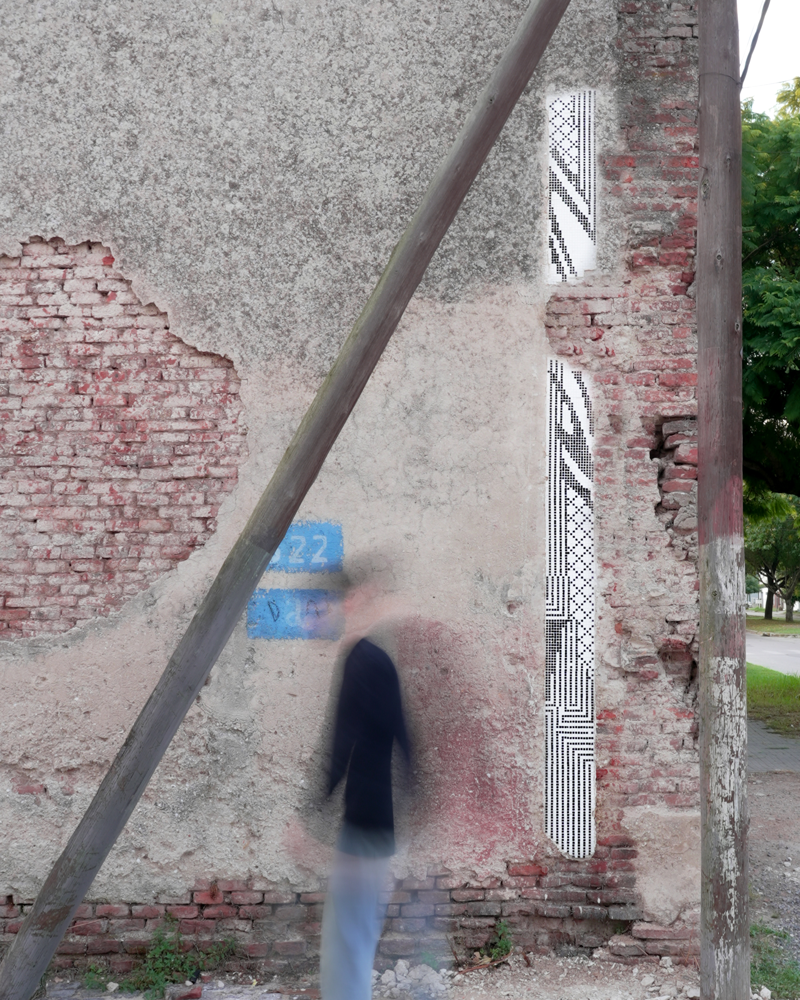
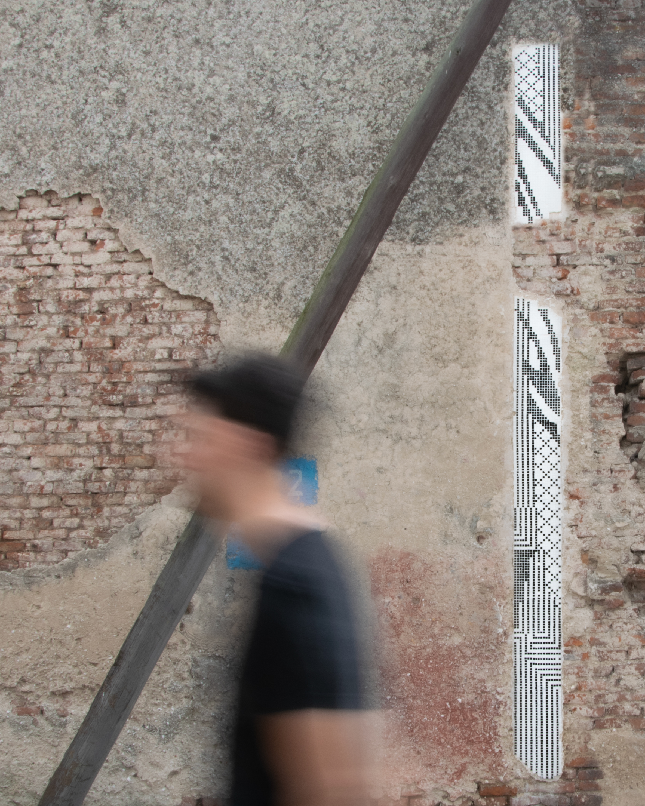

PASAJES
Serie of generative mosaics
(...) The mosaic unfolds like another layer on that centuries-old wall.
Between the brick, the crumbling plaster, the mold, the utility poles,
the cobblestone floor and the orange light.
Tolosa, Buenos Aires, Argentina

